Front Room Temps, Jan/Feb 2022
With my Signals from ThermoWorks 4 channel bbq probe thermometer (link), I logged data in the front room of the house for a few weeks in the beginning of 2022. Here are the pictures of each probe location.
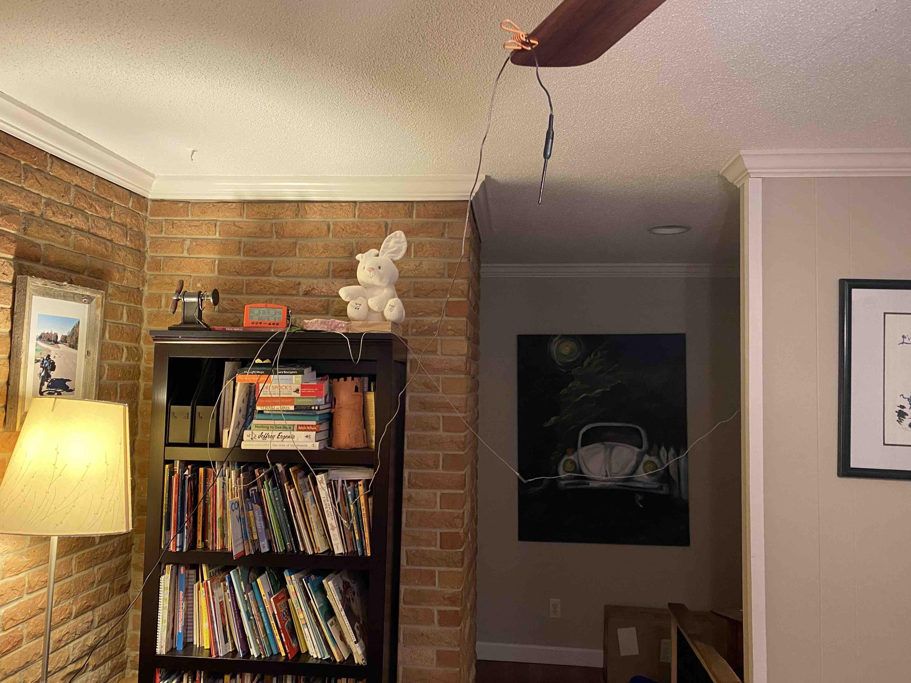
probe 1 attached on the ceiling fan
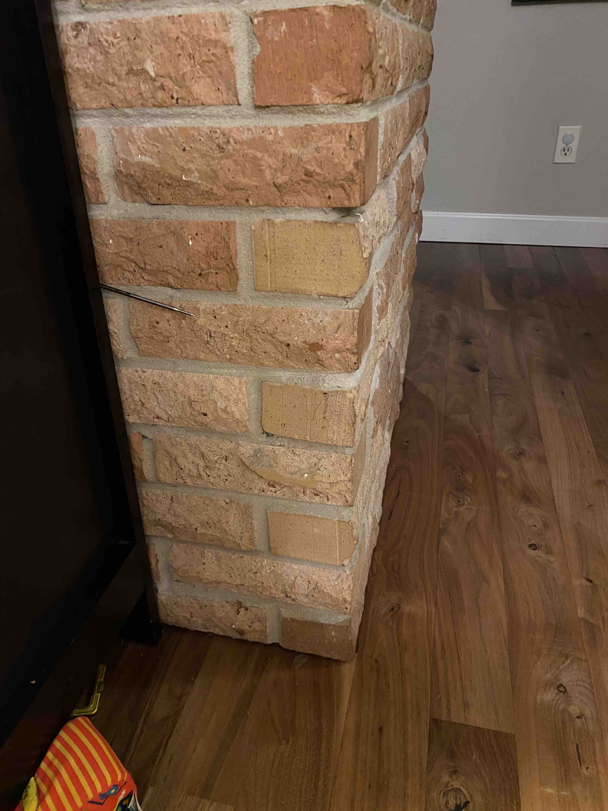
probe 2 about a foot above the floor
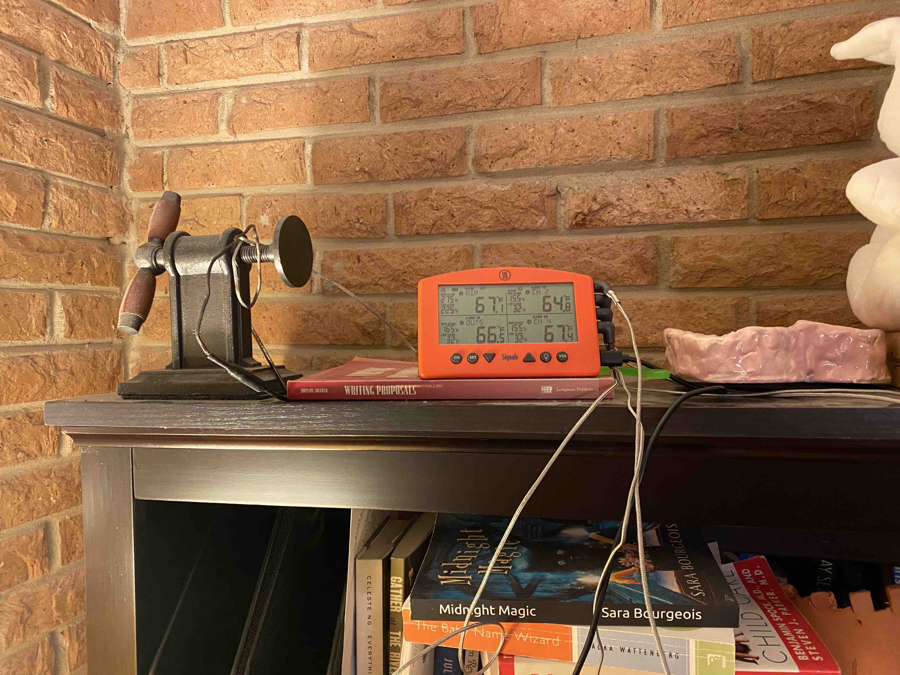
probe 3 on top of the bookshelf in the corner
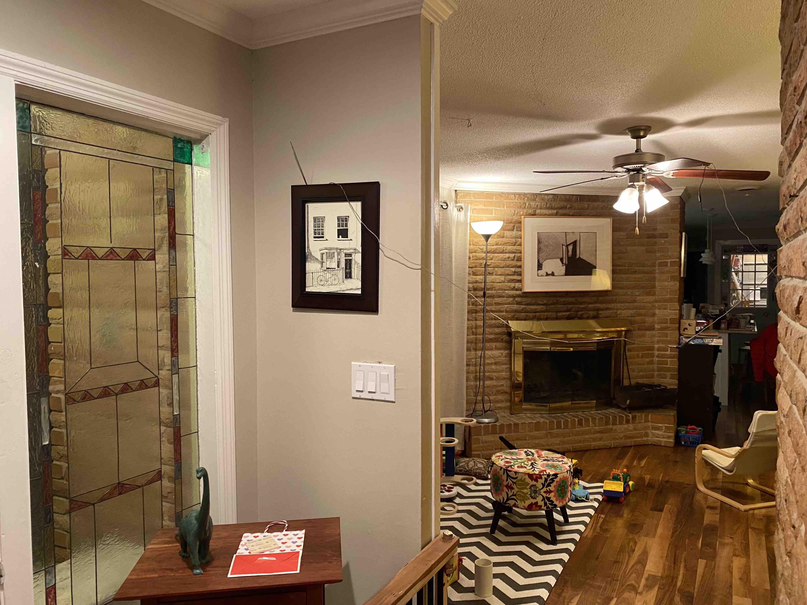
probe 4 near the front door window at head height
The data was set to record every second, and after going through the somewhat convoluted process to pull up the Thermoworks cloud dashboard, navigate to the relevant sessions (it makes me re-start every 24 hrs), and airdrop them to the computer, I can load them up into Python3 and make some plots and look at the trends.
By logging select weather data from KHSV (which I found to be a quite accurate representation of outside temperature at the house based on outside treehouse measurements), I can coplot the outside temp (dt ~ 1 hr) without having to send a probe to the outside.
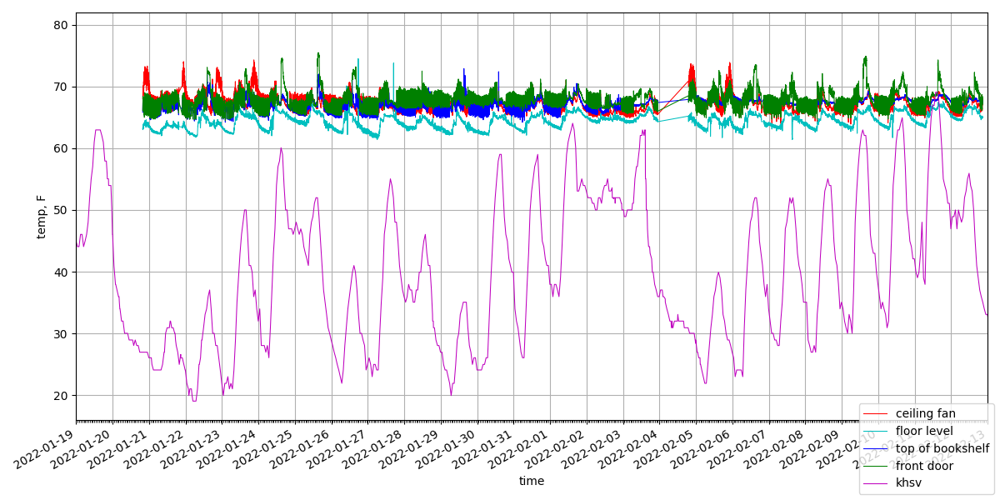
The days on the plot that show red above the rest of the scatter are days that I built a fire in the fireplace. I am observing that the conditions were desirable for the extra warmth since the highs of the day were in the 40s despite being 60s a few days prior. Additionally the nights were freezing. It appears I stopped building fires in the evening time once the daytime temps rose closer to 60, even if the nights were still freezing.
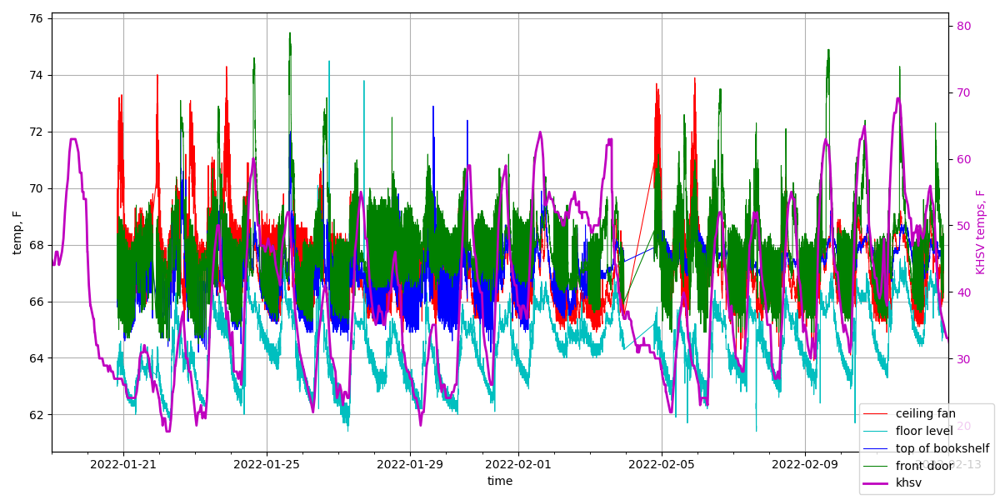
Plotting the KHSV data on a separate axis allows for a closer zoom and some better overlay which indicates a few things:
The red/blue data is the air near the top the room, and apart from the effects of the warmth of the days, the heat pump keeps it between 65 and 69. A fairly decent swing but since we keep the heat pump at a constant 66 deg, that is a natural result of the on/off cycling. The thermostat is just around the corner in the hallway so the head height measurements shown here should be close to what the heat pump cycles to.
The top of the bookshelf trends quite well with the ceiling fan although I must note that I think the probe was around the corner in a more air-suspended location prior around where there is that day gap in data (2022-02-04). Perhaps that explains why the blue appears to tighten up compared to the green.
The shape of the decline in temperature at nightfall is quite similar to that of the floor level temperature probe (cyan)
The floor probe temp (cyan) shows a degree or two higher when the day has been warm and the nights not as cold. Knowing that we set our heat pump at a constant 66 degF night and day, perhaps this is the explanation for why it feels so much colder in the house on a cold day: the gradient between head and toe temperature is so much greater when its cold outside as there is constant warm rising upward and exiting to the outside. I intentionally set probes near the somewhat leaky front door but despite this, the lower measurement isn't as low as I was expecting, only a few degrees. I suppose only a few degrees on your feet is enough to notice?
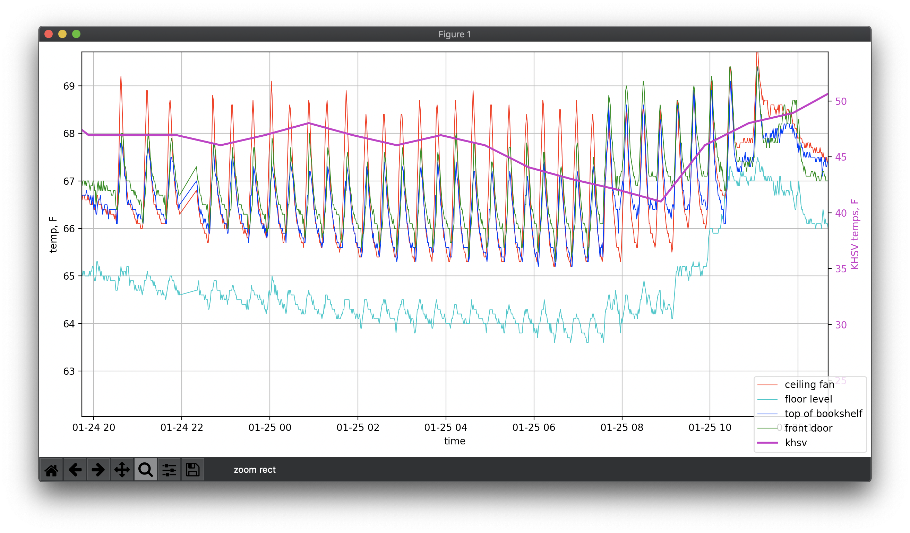
You can see that during this ~40 deg night, the heat pump had no problem and maintained temperature with a small duty cycle. It appears that the heatpump kicked on for a short while, quickly bringing it up to temp, then the watch
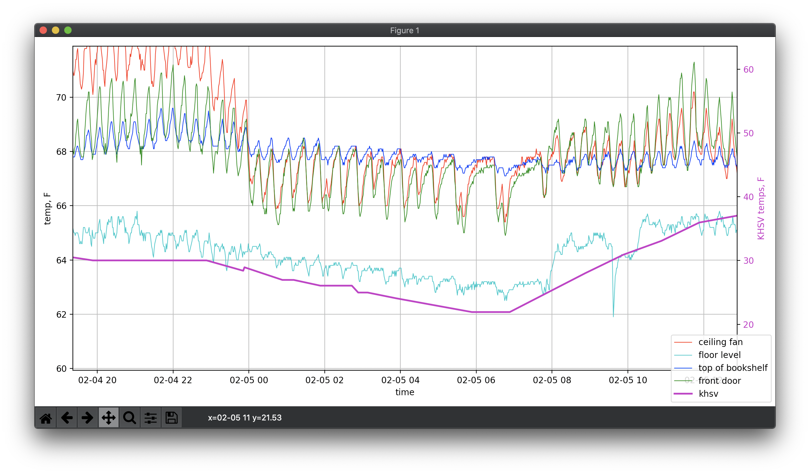
On a colder night, as the night progressed onward the unit took longer and longer to bring the temperature of the house down. It might pay to drop the thermostat down on these nights to save some energy and add a blanket.
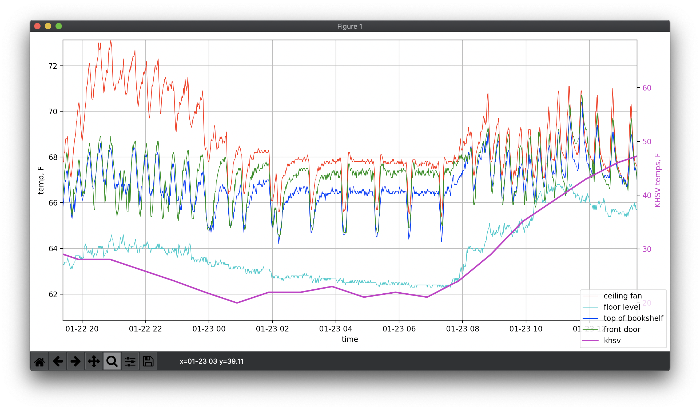
On the coldest night in this period, you can see that the heat pump ran more often than not, having a hard time keeping up with the temperatures being so cold and there being very little residual warmth in the house from the cold day prior.
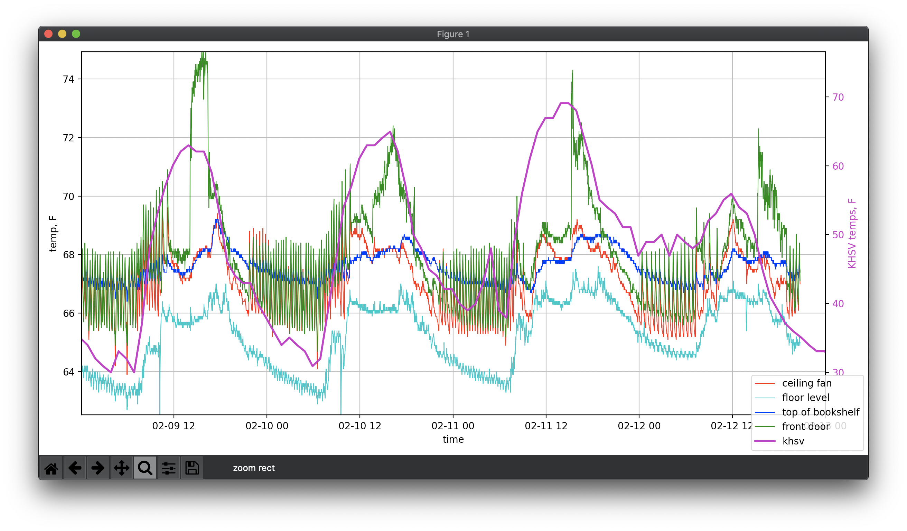
Across a few warm days I noticed that the probe near head height at the front door showed curious peaking in the afternoon. At first I though the sun may have hit that part of an uninsulated section of roof above but it doesnt occur at the same exact time in the afternoon, despite the drastic noticeable sharp leading edge.

An overlay of all the days from midnight to midnight shows the general trend of the night and day cycle. The sudden dips in the cyan floor probe sensor are most assuredly a child touching the probe. The nights with the fireplace are clearly visible with little remaining effect of the fire in the room just hours after it goes out around midnight or so. While the green and blue traces show a fairly repeatable band from day to day, the floor probe is affected the most with outside temperature. While only a few degrees below the head height temperature, its variation of 3-4 degrees I believe is what I observe on those colder days/nights.
I still don't quite understand why the door probe (green) jumps up in the mid-afternoon.
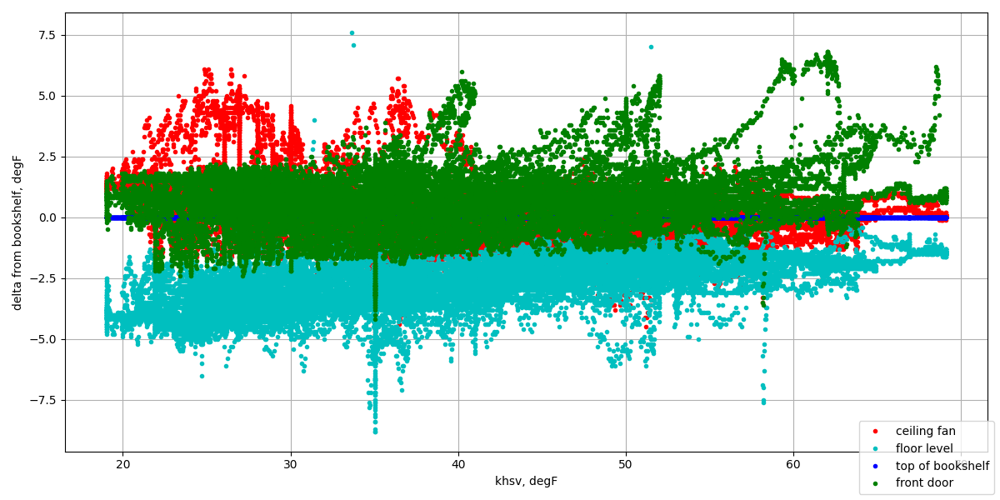
Taking the differences to the bookshelf sensor (the most behaved measurement), and plotting each individual point against an interpolated set of KHSV tempeatures, a pattern emerges. As the outside temperatures fall colder, the delta between the floor probe and the head height are further apart both on average. I do also notice that the window head height measurement does start to dip down more at the low outside temps, likely because the heat pump can't hardly keep up and there is some leaking near the window. This graph also readily highlights that I didn't build a fire unless it was strickly below 40 degrees.
{kind=link}
{kind=link}
{kind=link}
{kind=link}
{kind=link}
{kind=link}
{kind=link}